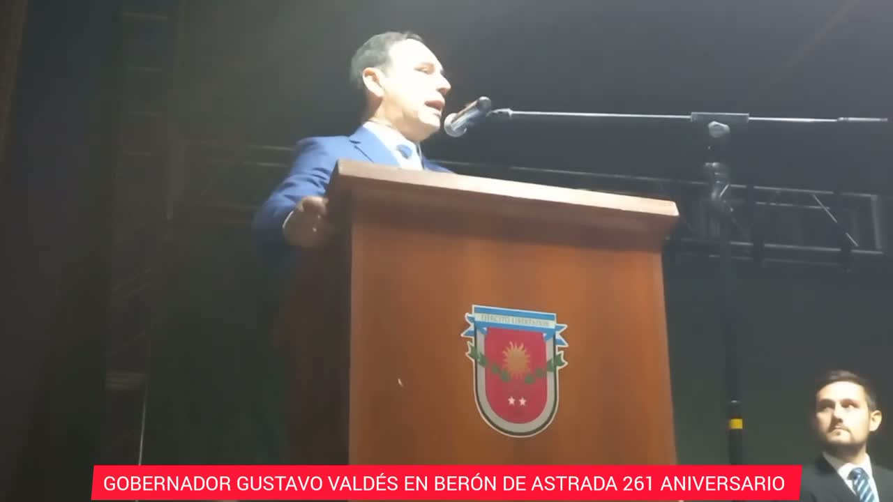

16 de marzo de 2025 · Berón de Astrada · 261.º aniversario local
«El único gobernador… muerto en combate»
Valdés explica por qué la localidad lleva el nombre del antiguo gobernador. Lo identifica como Genaro, menciona su muerte en combate, califica a Pago Largo como una batalla contra el centralismo porteño y enlaza esa memoria con la autonomía correntina actual. La mención comienza aproximadamente en 04:09; el nombre se oye en 04:26 y Pago Largo en 04:52.
«…el único gobernador de la provincia de Corrientes muerto en combate… Genaro Berón de Astrada… la batalla de Pago Largo».
Iconografía observable: la cámara muestra a Valdés ante un atril con escudo local y un rótulo televisivo del aniversario. Este plano documenta la puesta en escena institucional; no muestra un retrato de Genaro ni permite atribuir uno a ese momento del discurso.